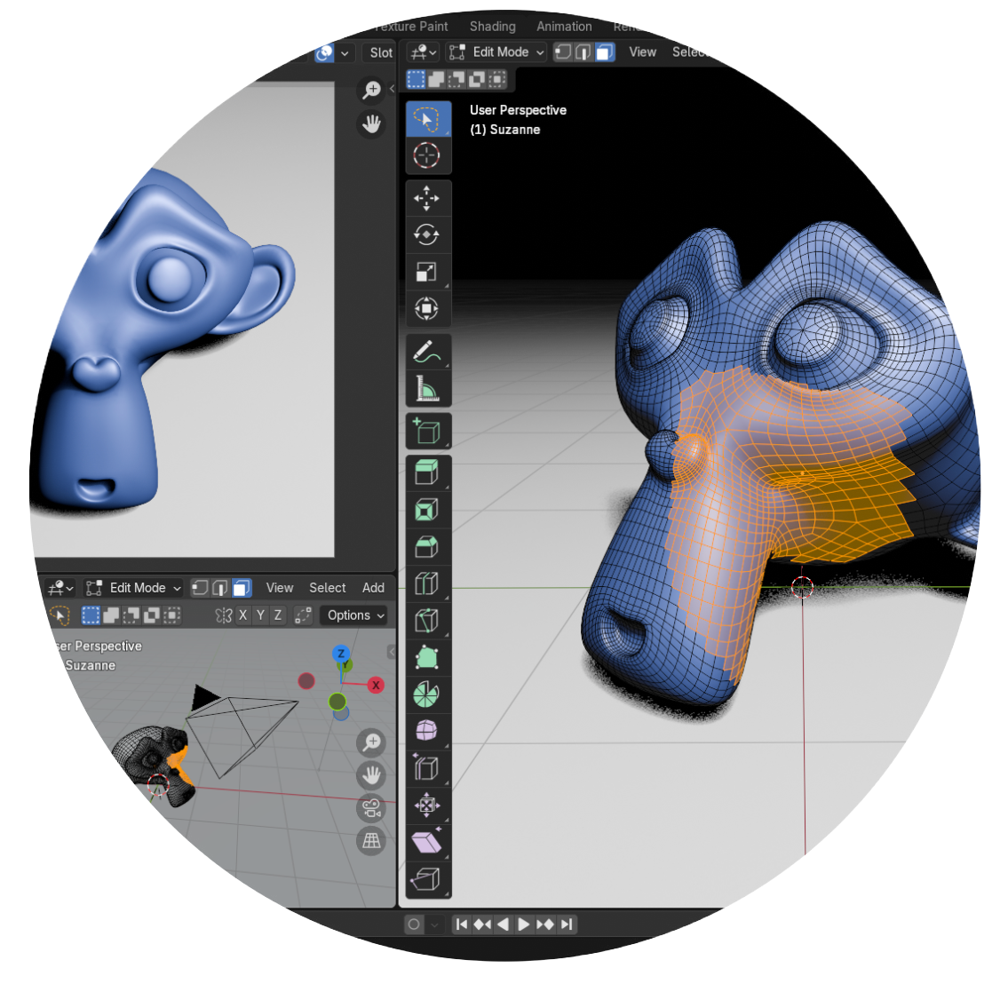
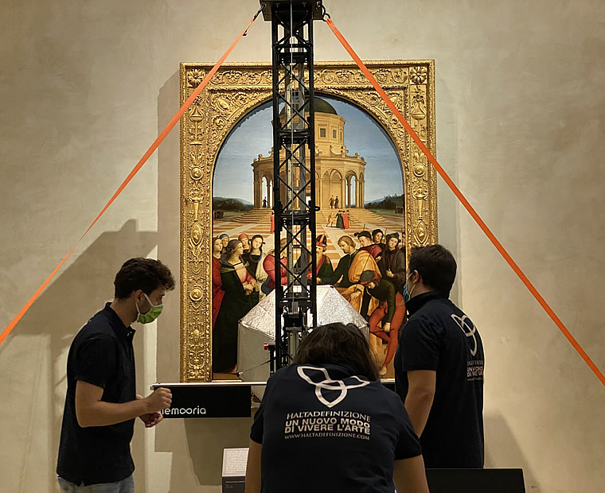

| Umenie | Vzdelanie | Šport | Zábava | Domácnosť | Zdravotníctvo |
|
 |
Počítačová grafika
Vektorová grafika (2D)Rastrová grafika (2D)3D grafika |
 Adobe illustrator
Adobe illustrator |
Adobe Photoshop | Blender |
|
 |
Digitalizácia umenia
|
ZDROJE: https://sk.wikipedia.org/wiki/Po%C4%8D%C3%ADta%C4%8Dov%C3%A1_grafika
https://www.researchgate.net/publication/396574694_The_Impact_of_Applied_Informatics_and_Digitalization_of_Traditional_Arts
https://www.art.art/post/how-digital-archiving-is-saving-art-history-for-the-future
https://www.researchgate.net/publication/396574694_The_Impact_of_Applied_Informatics_and_Digitalization_of_Traditional_Arts